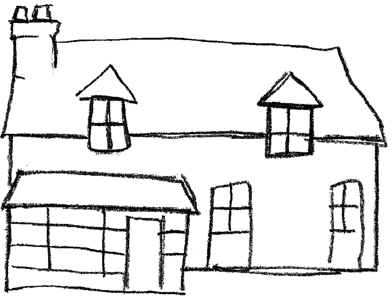

Permettant des horaires élargis adaptés aux conditions de travail des parents et une meilleur gestion en cas de problème (ex: accompagnement d'un enfant malade)
1 maison

Accueil jusqu'à
Reservée à l'accueil des enfants et aménagée à cet effet
4 grande rue à St-Eliph
12 Enfants
Leur fait découvrir la vie en groupe et permet la mise en place d'activités